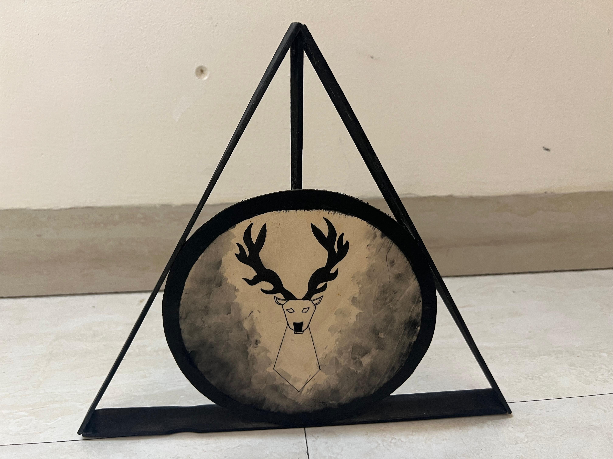
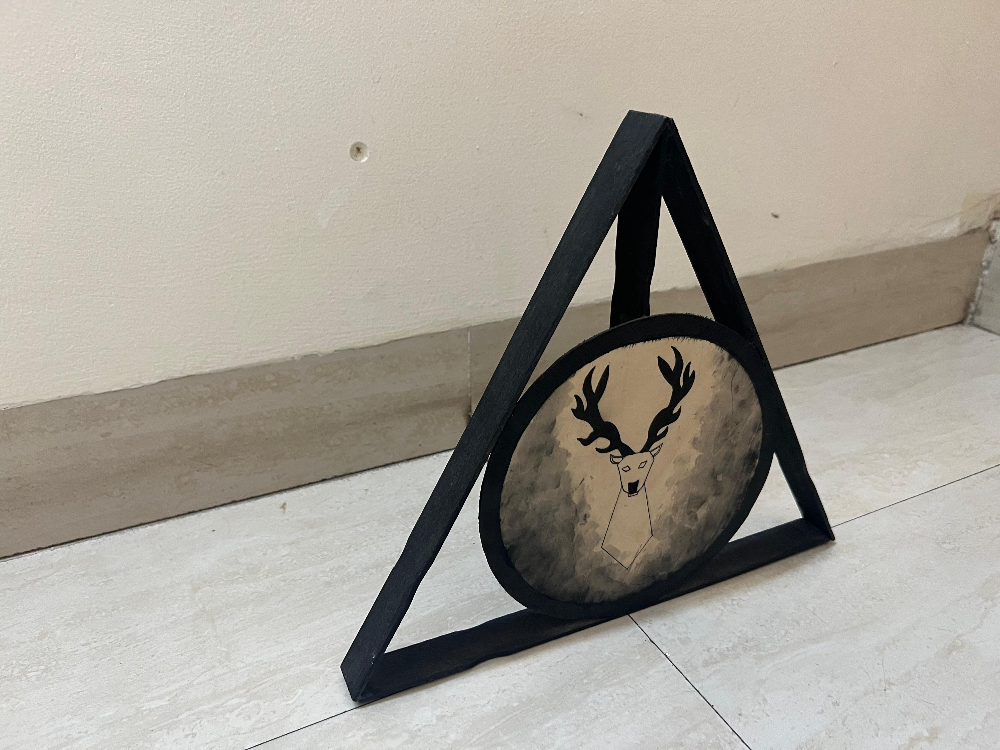
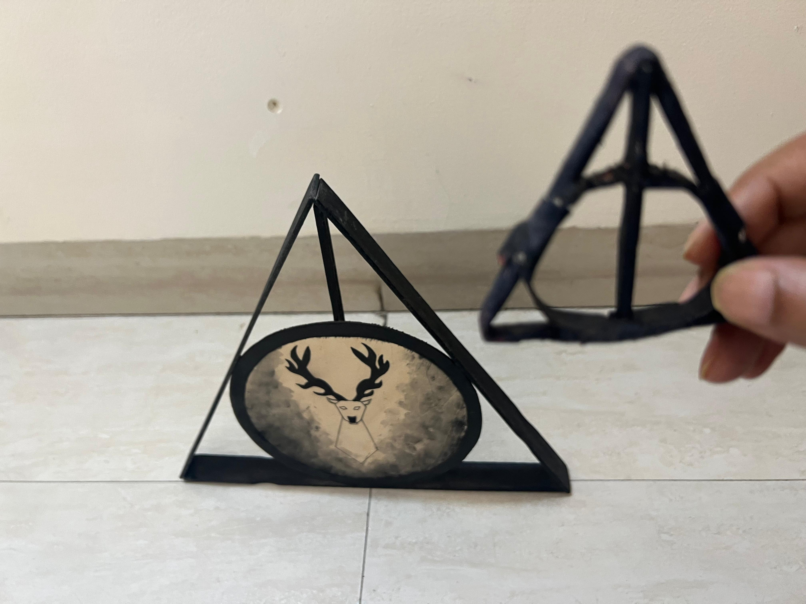
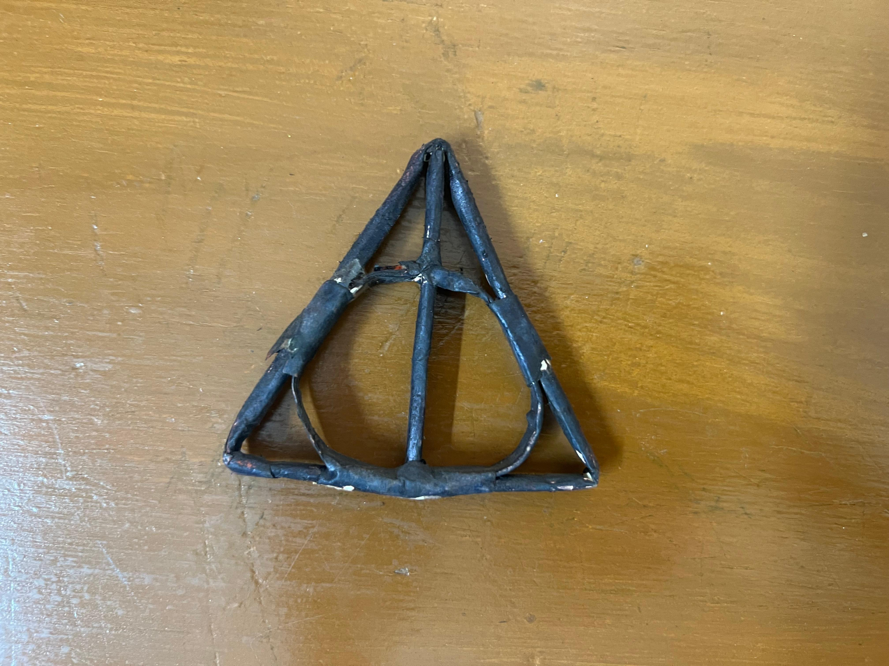

Crafts
Deathly Hallows Sign

About This Piece
I made this Deathly Hallows sign from Harry Potter using paint sticks and a wooden plywood base.
After making the larger version, I also tried making a smaller paper version of the same symbol.
Paint Stick and Plywood Version

Paper Version

